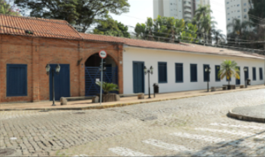
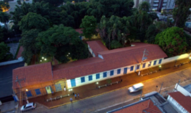

O Museu foi inaugurado em 1983, quando o Casarão Pau Preto foi declarado de utilidade pública. Desde então, coleta objetos significativos da história de Indaiatuba, formando um acervo eclético sobre o século XX. A antiga Fazenda Pau Preto, construída no início do século XIX com taipa de pilão e de mão, usou mão de obra escrava. Atualmente, o Casarão abriga o Museu, o auditório Tulha e um bosque com árvores centenárias da antiga fazenda.
Endereço
Rua Pedro Gonçalves, 477 - Centro
Telefone
(19) 3836-9961 / (19) 99906-9434 WhatsApp
Horário
Terça a sábado: 9h às 17h
Domingo e feriados: 9h às 12h
Entrada
Gratuita